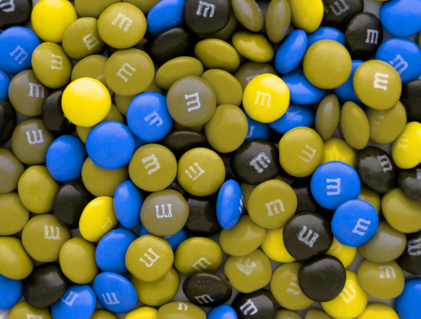

적색맹은 적색 감각의 결여로 인해 적색과 녹색을 구별할 수 없는 시각 장애입니다.
이는 적색 감각을 조절하는 데 사용되는 콘색소가 부분적으로 또는 완전히 결여되어 발생합니다.
따라서 적색맹인 사람들은 적색과 녹색 사이의 구별을 못하고, 이를 대체로 회색으로 인식하게 됩니다.
적색맹은 대부분 선천적인 유전적인 이유로 발생하지만, 후천적인 원인으로 인해 발생할 수도 있습니다.
선천적인 경우, 이러한 시각 장애는 개인의 X 염색체에 관련된 유전자의 변이로 인해 발생합니다.
따라서 남성들에게서 발생하는 빈도가 더 높습니다. 후천적인 경우, 적색 감각을 조절하는 콘색소가 손상되는 것이 원인이 될 수 있습니다.
이는 눈의 질환, 안구 손상, 약물의 부작용 등이 원인이 될 수 있습니다.
적색약은 적색 감각의 일부 손상으로 인해 적색과 녹색을 구별하는 능력이 약화된 시각 장애입니다.
적색약은 선천적인 유전적인 이유로 발생하며, 적색 감각을 조절하는 콘색소 중 일부가 비정상적으로 작동하는 것이 원인입니다.
적색약인 사람들은 적색과 녹색 사이의 구별력이 저하되어 있습니다.
일반적으로 빨간색과 녹색 사이의 구분이 어려우며, 일부 색상이 서로 비슷하게 보일 수 있습니다.
이는 적색 감각의 일부 기능이 손상되었기 때문에 발생합니다.